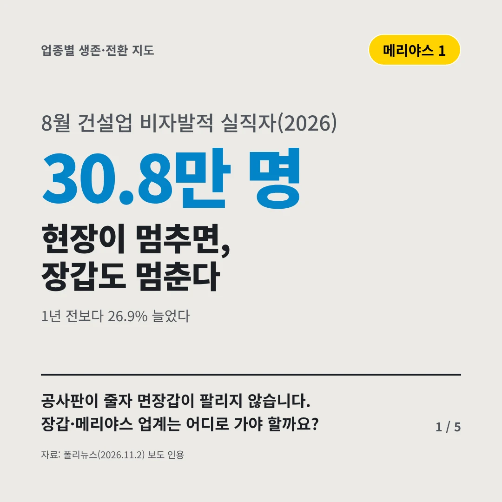
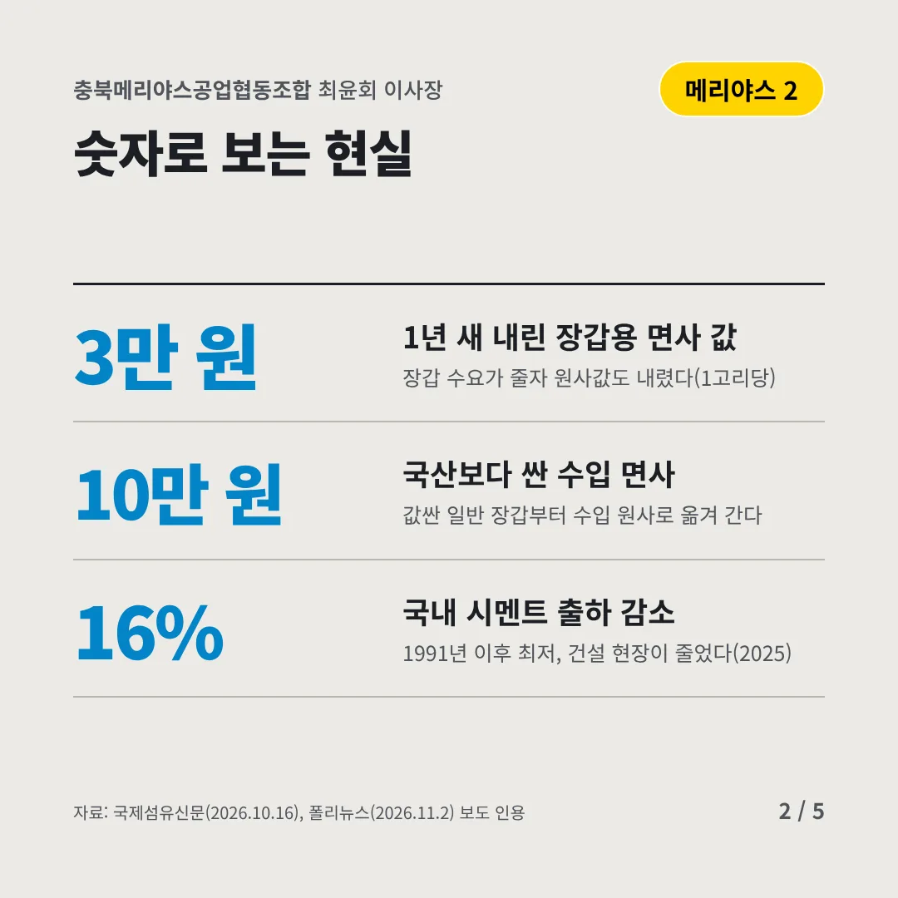
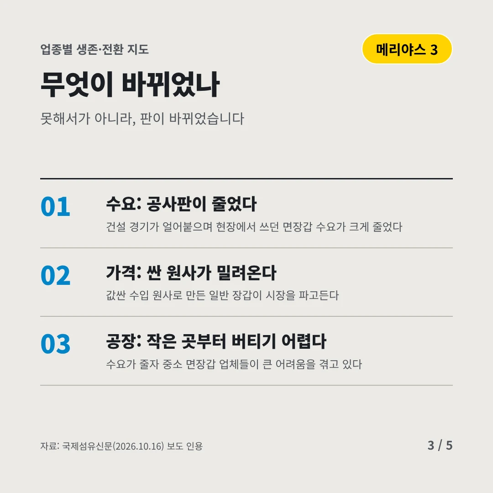
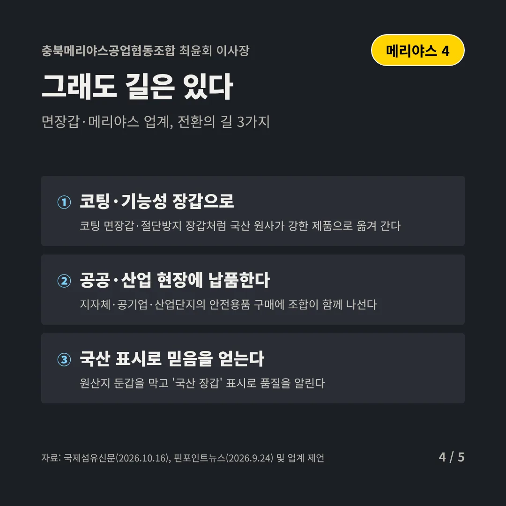
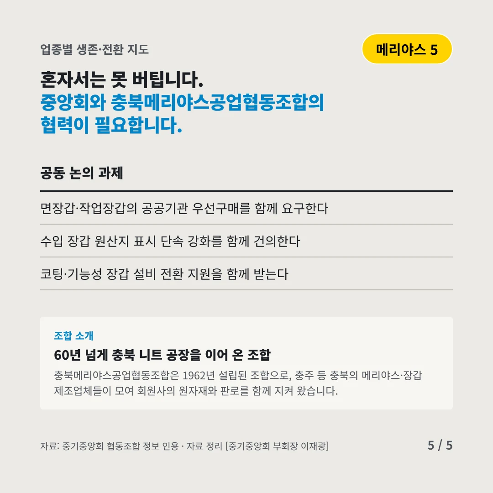
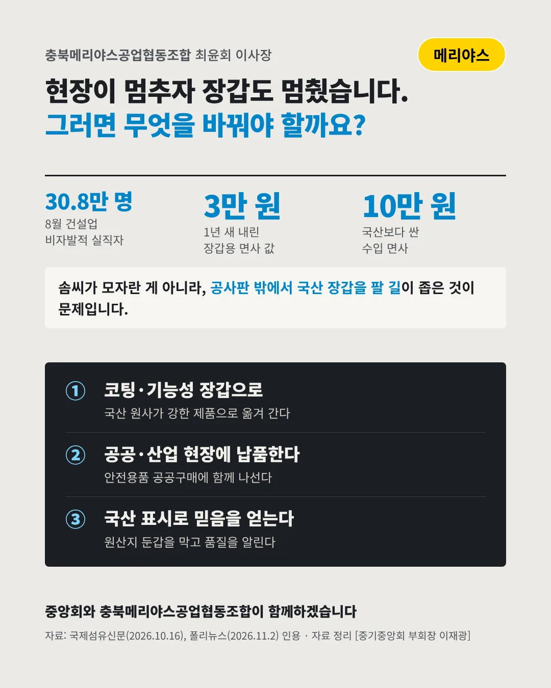

충북메리야스공업협동조합
현장이 멈추면, 장갑도 멈춘다
30.8만 명 8월 건설업 비자발적 실직자(2026)






공사판이 줄자 면장갑이 팔리지 않습니다. 장갑·메리야스 업계는 어디로 가야 할까요?
숫자로 보는 현실
- 3만 원1년 새 내린 장갑용 면사 값장갑 수요가 줄자 원사값도 내렸다(1고리당)
- 10만 원국산보다 싼 수입 면사값싼 일반 장갑부터 수입 원사로 옮겨 간다
- 16%국내 시멘트 출하 감소1991년 이후 최저, 건설 현장이 줄었다(2025)
무엇이 바뀌었나
- 수요: 공사판이 줄었다건설 경기가 얼어붙으며 현장에서 쓰던 면장갑 수요가 크게 줄었다
- 가격: 싼 원사가 밀려온다값싼 수입 원사로 만든 일반 장갑이 시장을 파고든다
- 공장: 작은 곳부터 버티기 어렵다수요가 줄자 중소 면장갑 업체들이 큰 어려움을 겪고 있다
그래도 길은 있다
- 코팅·기능성 장갑으로코팅 면장갑·절단방지 장갑처럼 국산 원사가 강한 제품으로 옮겨 간다
- 공공·산업 현장에 납품한다지자체·공기업·산업단지의 안전용품 구매에 조합이 함께 나선다
- 국산 표시로 믿음을 얻는다원산지 둔갑을 막고 '국산 장갑' 표시로 품질을 알린다
한 장 요약

조합 소개
충북메리야스공업협동조합은 1962년 설립된 조합으로, 충주 등 충북의 메리야스·장갑 제조업체들이 모여 회원사의 원자재와 판로를 함께 지켜 왔습니다.
자료: 폴리뉴스(2026.11.2), 국제섬유신문(2026.10.16), 핀포인트뉴스(2026.9.24)